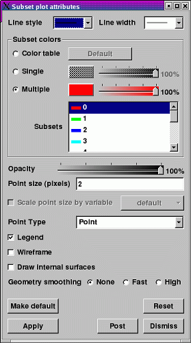
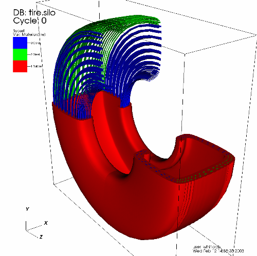

The Subset plot (example in figure) is used to display subset relationships. The typical scientific database can be decomposed into many different subsets. Frequently a database is decomposed into material subsets or assembly subsets. The Subset plot draws the database with its various subsets color coded so they can be distinguished. For more information about subsets, see the Subsetting chapter.
|  |
| Figure 45 |
|  |
| Figure 46 |